报到前的准备
- 查看录取通知书，确认报到日期。
- 按校方清单准备所需文件。
- 提前安排交通及住宿。
找课室、找吃的、拿包裹，校园大小事这里看。
想去哪里？点击地图上的地点编号就能查看详情。地点较近时会分开放，细线连接对应位置；也可以放大地图慢慢看。
选择一个地点，查看位置、开放时间和实用资讯。
以下为一般准备建议；具体要求以当届学校报到通知为准。
学长姐经验分享 · 具体安排请留意校方官方群通知。
至少准备两套白色衬衫，迎新活动时需要穿。
一般准备建议，具体文件及住宿要求以当届报到通知为准。勾选只保存在这台设备的浏览器中。
男生宿舍：Block 1–5。女生宿舍：Block A–E。
报到时先确认自己的 Block 和房号，再跟着现场标示找宿舍。地图目前标示宿舍区域，尚未逐栋定位。
可通过 SPMP 或到 HEP 申请：Sem 2 起可申请带摩托，Sem 3 起可申请带汽车。先完成申请并确认获批，再按学校要求停放。
不论 Sem 几，也可选择把车停在校外停车场。但那里没有监管，车辆与财物需要自行看顾；这不等于获准把车带进校园。
资料由同学于 2026年10月3日补充；车辆申请条件与批准安排以 HEP 最新通知为准。
每个插座位置只有一个插口；房间设有双开门大衣橱。
Block 1／Block 2 区域与 Block 3／Block 4 区域各有一台饮水机。
宿舍楼层为 G 楼至 4 楼。G 楼的晾衣区在左右两侧的中间位置；1–4 楼的晾衣区在门口就能看到。
学长姐经验分享 · 具体安排请留意校方官方群通知。
入住时先检查灯、风扇、门锁、水管和衣橱。发现损坏先拍照，再找 Felo 老师或负责的学长姐，并说明 Block、房号和损坏情况。
迎新期间，如果房间的灯、风扇、水管、门锁等设备损坏，可以找 Felo 老师或负责的学长姐协助。说明 Block、房号和损坏情况，方便他们跟进。
宿舍有二人房和四人房。每层有两大间共用厕所，每间内至少有三个厕所隔间和三个冲凉房。
记得带扫把、垃圾桶、垃圾袋和其他打扫用品，学校通常不提供。可以先和室友商量哪些用品一起准备。
生病时请致电当天值班的 Felo-on-call，说明自己的 Block、房号和情况。值班电话请查看宿舍最新值班表。
根据同学分享，可以带 Printer，也可以在宿舍提供收费打印／复印服务；具体经营安排以宿舍管理方要求为准。
根据同学提醒，超过规定／获批的外出时间回校，会被罚款和没收学生卡。出门前确认回校时间，并为等车和路程预留时间；实际处分以校方执行为准。
建议自带自己习惯的枕头。
以上为同学于 2026年10月3日提供的住宿经验与提醒，非校方正式规章。
放假离校需要在 SPMP 提交申请。建议在离校前 3–5 天申请，预留处理时间，避免临时出现状况。
打开 SPMP PMS学长姐经验分享 · 具体安排请留意校方官方群通知。
校园网络会限制部分网站。部分日常上网需求可使用自己的手机流量或 Hotspot；留意流量用量。
以上连接步骤由同学提供；实际使用的应用、账号格式及设置以开学后的学校指引为准。若搜不到学校或登录失败，请向学校 IT 单位确认。
学长姐推荐：Digi、Yes。
这是同学的使用经验；实际信号会因宿舍 Block、房间位置、手机及使用时段而异。
资料由同学于 2026年10月3日分享。
i-Kamsis、课程管理、个人信息、实习（Intern／Latihan Industri）等学生事务。
打开 SPMP PMS科目的 Assignment 通常会发布在这里。按讲师指示进入对应课程，查看作业要求与截止日期。
打开 CIDOS若讲师提供专用课程链接，请以该链接为准。
入学后，登录 SPMP 查看自己的课程表。请确认班级、学期和最新版本；下图仅为课表阅读示例。
打开 SPMP PMSMKT、MSKD1／MSKD2、MKR 等课室通常位于 JTMK 大楼。
BK 课室通常在 JP 区域。地图按钮会定位到 JP／JPA／JMSK 教学区域，具体课室请看现场门牌。
PA（Penasihat Akademik）是学业顾问老师，类似班主任，负责班级事务等。图中也有 PA 时段，请按自己班级的课表与老师安排出席。
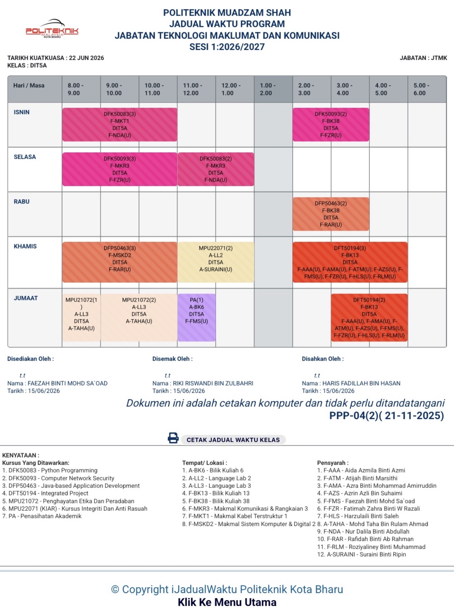
课表图片及课室位置说明由同学提供；实际课程、课室与 PA 安排以自己的最新课表和校方通知为准。
想参加活动、认识朋友，先看看各个学会在做什么。以下介绍及推荐来自学长姐分享，招募条件与活动安排以当届公告为准。
通常在迎新会结束后 3–4 星期，官方群会公布招募时间，请记得留意消息！
大多数活跃的学会通常会安排面试；JPP 则会在指定时间举办竞选。报名、面试和竞选日期以当届公告为准。
学长姐经验分享 · 具体安排请留意校方官方群通知。
Mandarin Language Club
华文学会。
Rakan Pusat Islam
协助 Pusat Islam／清真寺管理与相关事务。
华人成员较少，成员友善。
学生会（JPP）旗下的社团。
直属 Encik Syahmi 的社团。
Rakan Siswa YADIM
规模较大的学生社团。
成员友善，容易相处。
Pembimbing Rakan Siswa
据学长姐分享，侧重学生娱乐与活动。
成员很团结。
关注学生健康，参与体检（Medical Check-up）等相关活动。
面向非穆斯林学生的活动社团。
推荐加入；据同学经验，有较多获得国际活动证书（Sijil）的机会，视当届活动而定。
参与国际活动的筹办与协调。
推荐加入；据同学经验，有较多参与国际活动的机会，视当届安排而定。
Jawatankuasa Perwakilan Pelajar
学生会，需参加竞选。
学长姐个人不太推荐：工作较多、比较累，加入前先考虑课业与时间安排。
宿舍管理相关学生组织，需参加竞选。
JTMK
JTMK 学生专属社团，负责科系的大大小小活动。
JKM
JKM 学生专属社团，负责 JKM 学生活动。
查找食堂、校园商店和洗衣服务，出门前确认门禁时间。
资料由网站维护者提供，整理于 2026年10月2日，尚未向校方核实；临时调整以校方及现场通知为准。外部页面由原作者维护。
校园商店保留 Coop Mart 与 Bizz Mall。以下一般食堂资料与 Cafe Koi 分开记录；各店铺安排以现场为准。
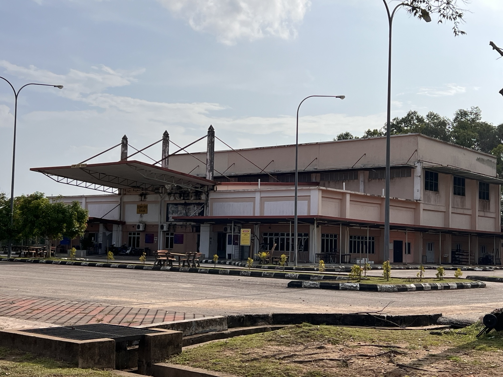
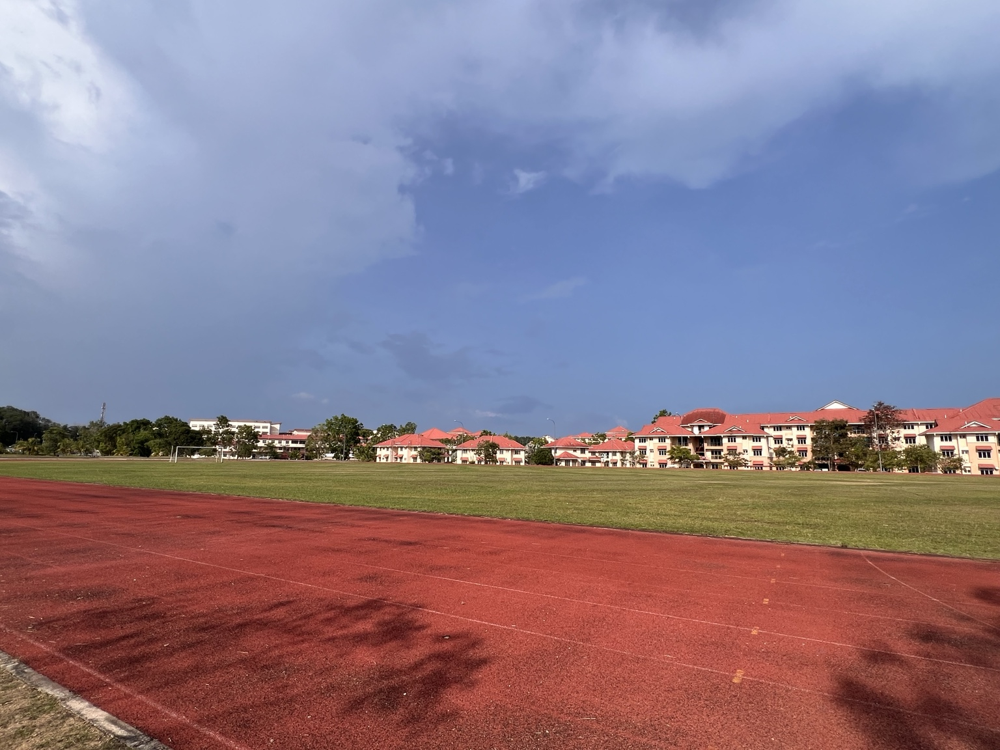
羽毛球场、排球场、乒乓球场、跑道、篮球场和射箭场。
傍晚 18:00–19:00 可欣赏夕阳，实际景色视天气而定。
校门口设有 ATM，可按需要提款。
包裹中心位于 Bizz Mall，领取时间待补充。
使用前核对科目代码、学期和年份；访问权限由资料拥有者管理。
想吃点不一样的、补货或剪头发？先选一个区域，再把想去的店顺路逛完。
想吃快餐、买杯饮料或补日用品，可以从这一区开始。
吃饭、买东西、剪发排在同一趟，比较好安排回校时间。点餐前先看价格，交通费也记得算进预算。
要补货、去银行或逛市集，可以安排来 Bandar。
带点零钱和购物袋；先问价格再买。地图指向 Eco-Shop 这一排，抵达后再找当天的摊位。
Satelit 区 Eco-Shop 楼上的华人理发店。星期日休息，别白跑一趟啦。
以上为同学提供的参考价；照片价目表列男生 RM15–28、女生 RM25–40。先说清楚只剪或洗剪，再让店家确认总价。
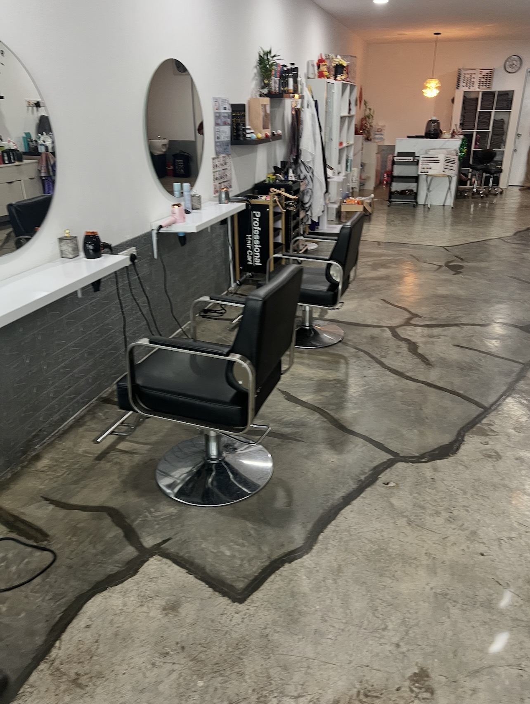
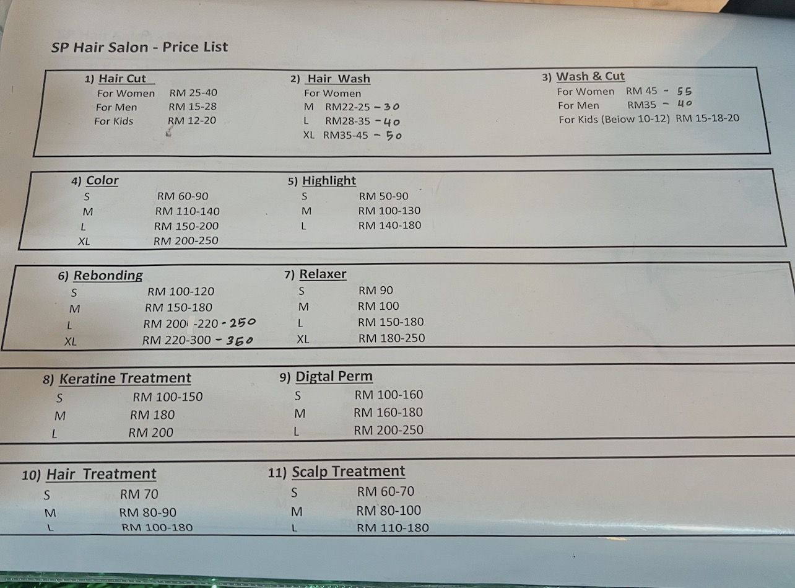
煮炒时间：下午 3:00–晚上 10:00。同学提供的地点和联络号码如下，出发前可先询问当天有没有开、菜单和价格。
33G9+8J, 26700 Muadzam Shah, Pahang
地图记录名称为「Restoran muadzam shah 茶室包点心」。两支电话由同学提供，暂未确认分别对应哪间店；第二间餐馆的名称与定位待补充。
煮炒时段不等于整间店的营业时间。点合菜前先问份量、总价和等候时间；用餐需求也可以先向店家说明。
目前出门可选择 Grab 或 Taxi，没有巴士服务。先确认有车接单，再安排出发；回程也记得提前约好。
可通过 SPMP 或到 HEP 申请：Sem 2 起可申请带摩托，Sem 3 起可申请带汽车。先完成申请并确认获批，再按学校要求停放。
不论 Sem 几，也可选择把车停在校外停车场。但那里没有监管，车辆与财物需要自行看顾；这不等于获准把车带进校园。
资料由同学于 2026年10月3日补充；车辆申请条件与批准安排以 HEP 最新通知为准。
2026年10月3日整理。Pasar、理发店位置／休息日、参考价格及煮炒联络资料由同学提供；店名与部分地址参考以下公开页面。地图为在线地图，可打开查看更清楚的街道和路线。
Politeknik Muadzam Shah · 马来西亚 · 彭亨州
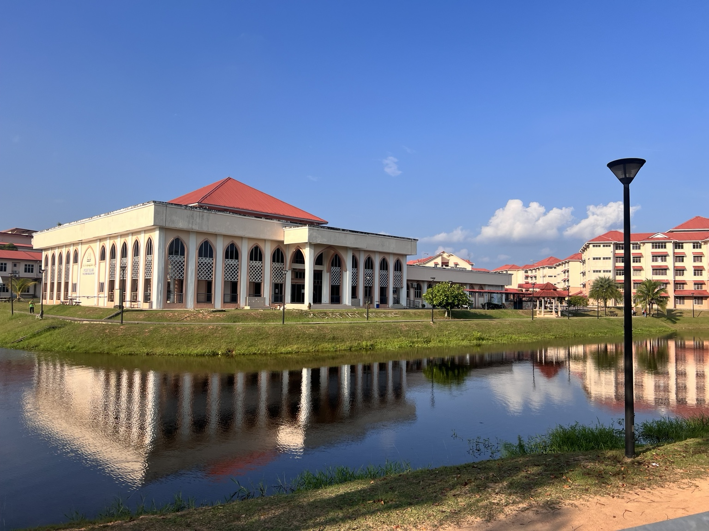
PMS 校园探索帮助有意报读的同学和新生认识 Politeknik Muadzam Shah，从学习环境到日常设施，提前了解校园生活。
这篇学生分享把 PMS 描绘成绿意环绕、步调较慢的校园，特别提到湖畔、跑道和傍晚景色。适合想提前感受校园日常的同学参考。
参考学生分享文章，非官方介绍；文章标注更新于 2026年2月9日。
阅读原作者的 PMS 校园分享根据学校官网科系介绍整理。开办课程、入学条件与招生安排，以官方最新公告为准。
提供资讯科技文凭教育与训练，学习计算机与资讯科技领域。
查看科系官网探索机械工程领域的学习与训练；具体课程请查看科系官网。
查看科系官网官网列有旅游管理与休闲旅游文凭课程。
查看科系官网官网列有会计与商业研究文凭课程。
查看科系官网了解设计与视觉传达领域的学习方向和课程。
查看科系官网通识，以及数学、科学与计算机相关支持教学。
查看科系官网湖边、花开，还有放学路上的晚霞。一起看看同学镜头里的 PMS，点击照片可查看大图。
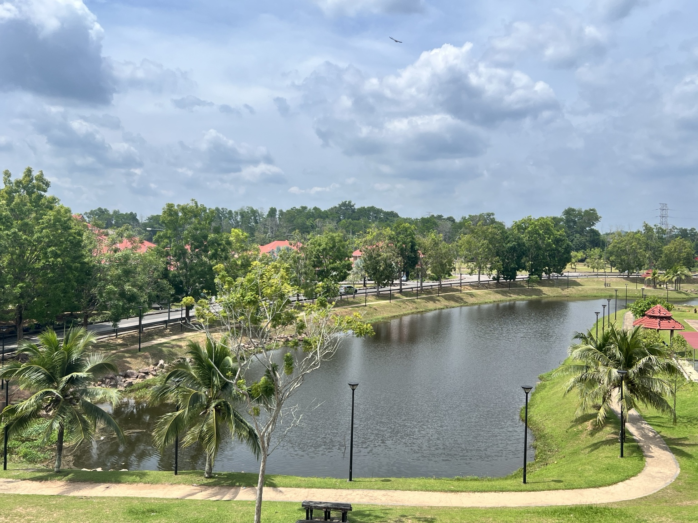
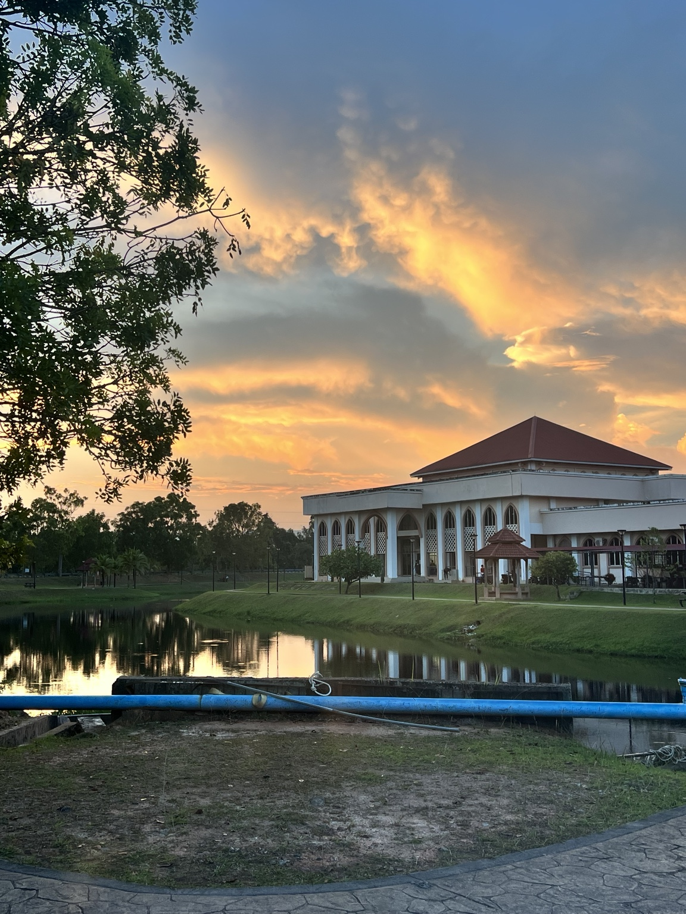
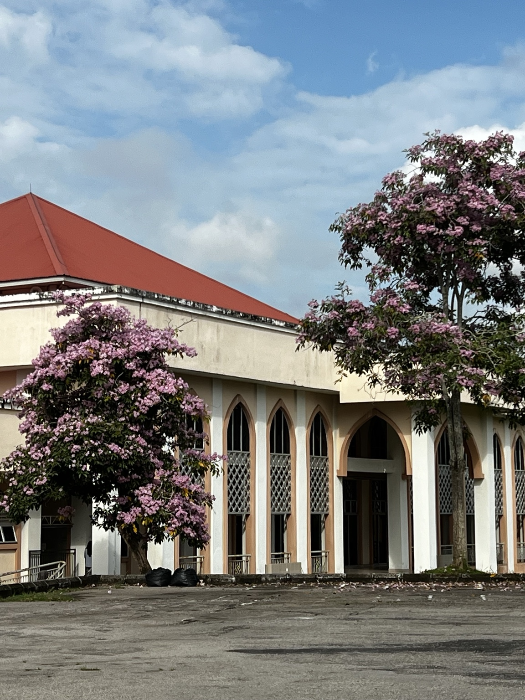
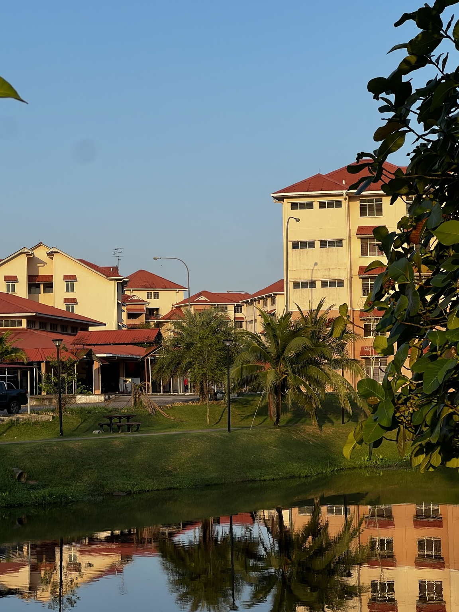
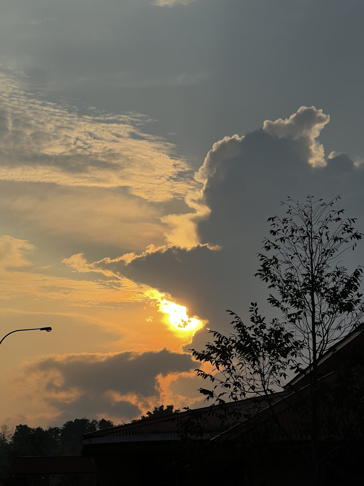
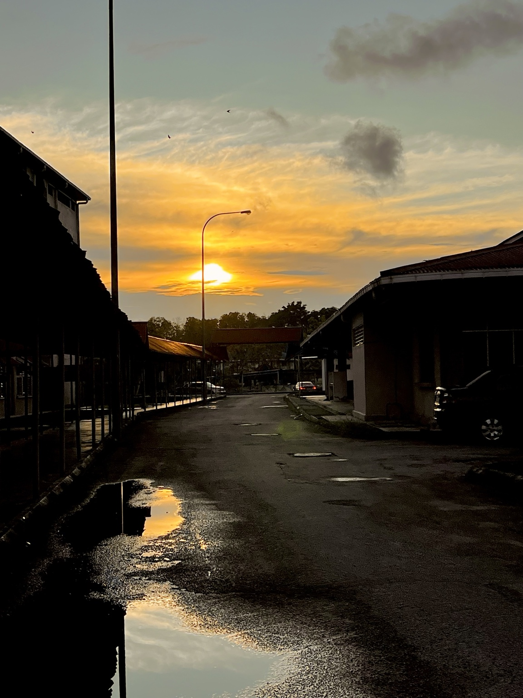
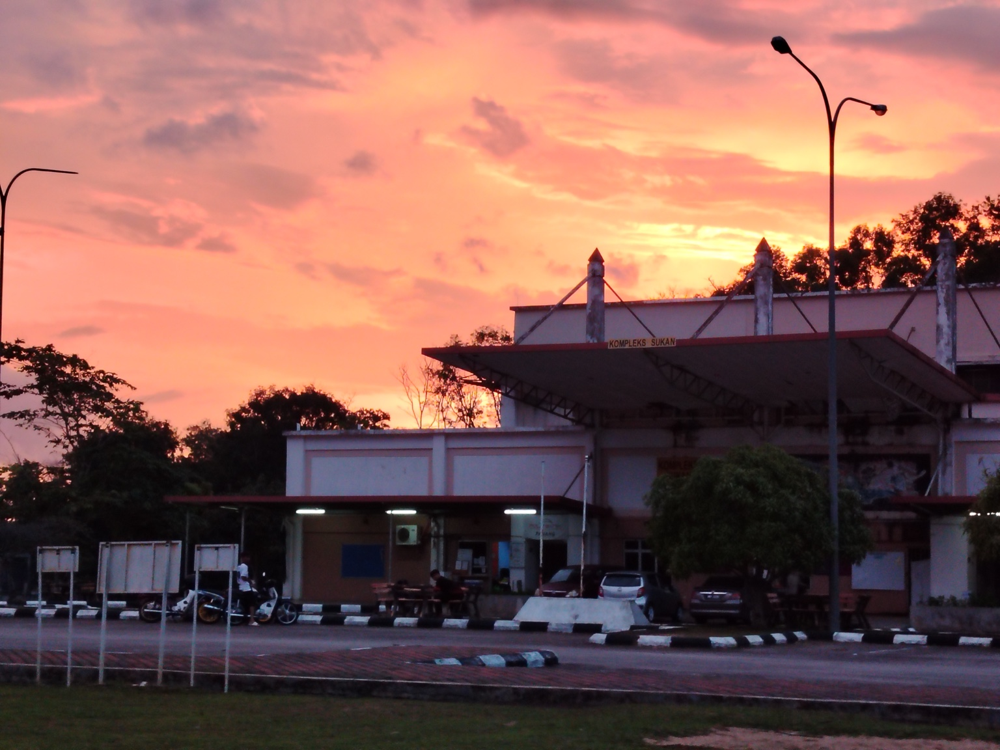